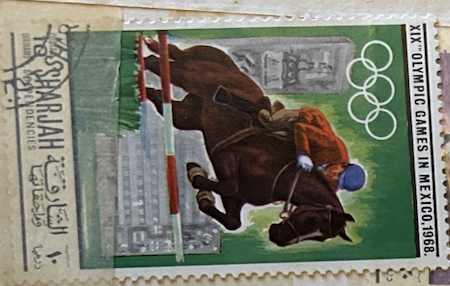
| SOURCE | TITLE| IMAGE MATCH | click to source page |
| eBay UK | Golfstaaten-Philatelie | eBay UK Stores | 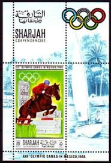 |
| eBay | Ajman 1971 Munich Olympics Glod Medals Horses Jumping Flags Imperf m/s MNH | eBay | 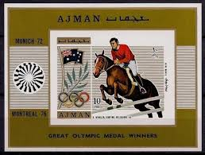 |
| Alamy | RAS AL-KHAIMAH - CIRCA 1970: a stamp printed in Ras al-Khaimah shows Apollo 13 in Orbit, Spaceflight, circa 1970 Stock Photo - Alamy | 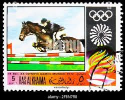 |
| From my collection. A collection of six postage stamps from the USSR, issued in 1975 for the Expo '75 held in Okinawa, Japan. The theme of the Expo was "The Sea We | 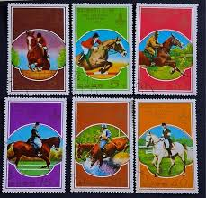 | |
| Dreamstime.com | Showjumping, Olympic Games 1968 - Mexico Serie, Circa 1968 Editorial Stock Image - Image of hobby, horse: 134970089 | 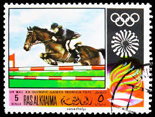 |
| Alamy | Stamp olympic games munich hi-res stock photography and images - Page 5 - Alamy | 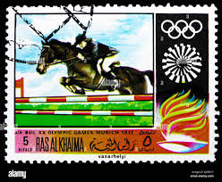 |
| Alamy | Stamp printed in Yemen Arab Republic shows Horse racing, Olympics in Munich, circa 1972 Stock Photo - Alamy | 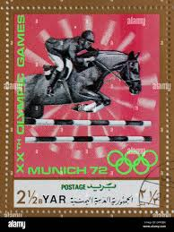 |
| CollectorBazar | a2zkollection ~ North Korea 1980 Pre Olympic Moscow Horse Riding / Equestrian 6 Different CTO Stamps for | 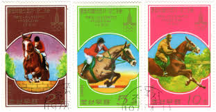 |
| Delcampe | Guyana (1966-...) - Guyana - 1989 Medalists (golden) block (4) MNH__(TH-7885) | 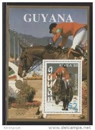 |
| eBay | SHARJAH 1968 OLYMPICS XF Perf+Imperf MNH** Sheets+Sets, Sports Equestrian Soccer | eBay | 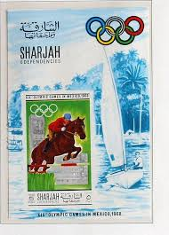 |
| eBay | Morocco 1981 1981 Equestrian Sports Games Horses Jumping Animals Nature 6v MNH | eBay | 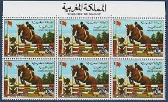 |
| eBay | Ajman Farm Animals Horse stamp 1972 A-4 | eBay | 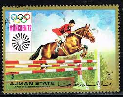 |
| Poppe Stamps | Poppe Stamps: Grenada, 1975, 739, Games, America, Horse Riding - stamps for sale by theme and country | 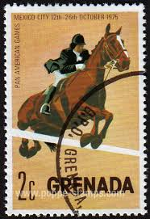 |
| The Philately | Turkmenistan Stamps for Sale - The Philately | 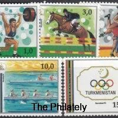 |
| Wikipedia | Halla (horse) - Wikipedia | 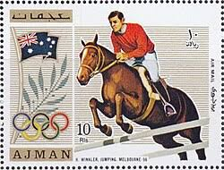 |
| eBay | Brazilian Olympics Postal Stamps for sale | eBay | 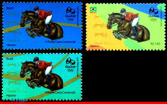 |
| Wikipedia | Equestrian at the 1992 Summer Olympics – Individual jumping - Wikipedia | 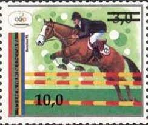 |
| Free stamp catalogue | Stamps from Equatorial Guinea - Freestampcatalogue.com - The free online stampcatalogue with over 500.000 stamps listed. | 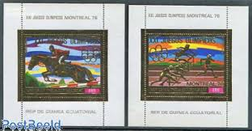 |
| Alamy | Spain postage stamp hi-res stock photography and images - Page 36 - Alamy | 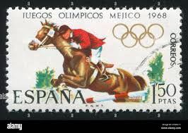 |
| Topic Stamps | TOPICSTAMPS.COM -- Stamps from all over the world | 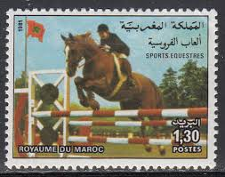 |
| buyhungarianstamps.com | 114-117 Uzbekistan - 1996 Summer Olympic Games, Atlanta (MNH) – Eastern Europe Postage Stamps | Hungaria Stamp Exchange | 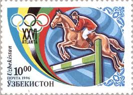 |
| Colorado State University | Tele-X satellite | 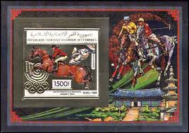 |
| Stamp Bears | Show your North Korea DPRK stamps here. | Stamp Bears | 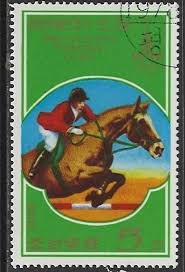 |
| Shutterstock | 16+ Thousand Vintage Olympic Royalty-Free Images, Stock Photos & Pictures | Shutterstock | 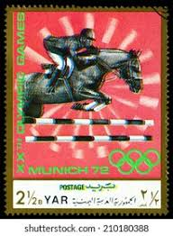 |
| Shutterstock | Mexico Olympic Games Spain Circa 1968 Stock fotografie 1191723601 | Shutterstock | 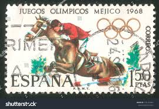 |
| terada77.com | GUINEA EQUATORIAL | 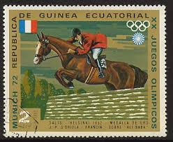 |
| eBay | Morocco 1981 Equestrian Sports Games Horses Jumping Animals Nature 1v MNH | eBay | 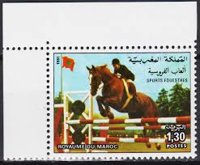 |
| eBay | SHARJAH UAE ARAB EMIRATES USED SPORT SHEET LOT (SHARJ 33) | eBay | 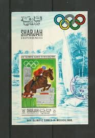 |
| These are fantastic equestrian stamps! With a family full of horse lovers I cant wait to make them into art! | 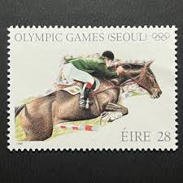 | |
| Etsy | Vintage Framed Postage Stamp - Sporting Horses - Steeplechase - No. 2756 - Etsy | 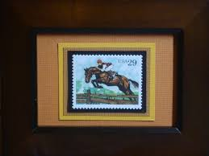 |
| Todocolección | st. vincent 1991 sheet mnh super bowl nfl futbo - Buy Stamps from other American countries on todocoleccion | 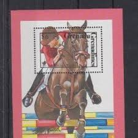 |
| Find Your Stamps Value | Value of mexico 1968 olympics stamps | 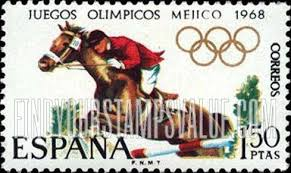 |
| eBay | Equestrian Middle Eastern Stamps for sale | eBay | 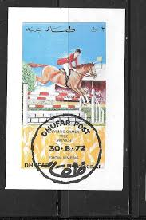 |
| Dreamstime.com | Sport on postage stamps editorial stock photo. Image of letter - 146720838 | 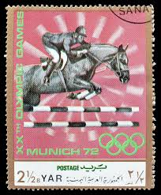 |
| allnumis.com | 2 Ptas Equestrian jumping - France 1952 Helsinki 1972, Sport - Equatorial Guinea - Stamp - 5751 | 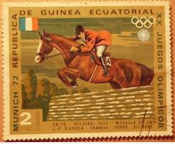 |
| eBay | OOS] Niger #YTPA93 EPL Proof 1968 Mexico Summer Olympics Horse Equestrian [C93] | eBay | 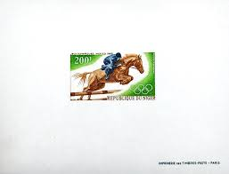 |
| Alamy | mail, postage stamps, Germany, Munich private local post, 1 1/2 pfennig postage stamp, 1896, ADDITIONAL-RIGHTS-CLEARANCE-INFO-NOT-AVAILABLE Stock Photo - Alamy | 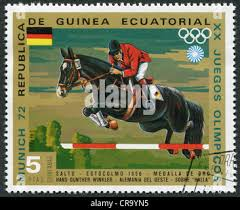 |
| Shutterstock | Postage Stamp Printed Yemen 1972 Commemorate Stock Photo 2278365645 | Shutterstock | 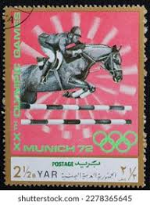 |
| eBay | Equestrian Riding Pendant Handmade 1975 Grenada Stamp Horse Rider Mexico City | eBay | 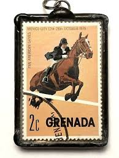 |
| Dreamstime.com | 4,497 Moscow Drawing Stock Photos - Free & Royalty-Free Stock Photos from Dreamstime - Page 15 | 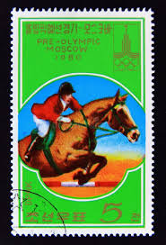 |
| Colorado State University | Brasilsat series (and other Brazilian communications satellites) | 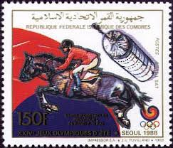 |
| Eagle Stamps | collecting zip blocks | 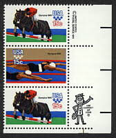 |
| eBay | India Olympics SG 974-5 MNH (4gsq) | eBay | 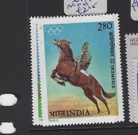 |
| Dreamstime.com | Postage Stamp North Korea, 1978. Horse Jumping Sport Editorial Stock Image - Image of mail, issue: 222989999 | 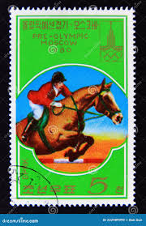 |
| eBay | Ajman 1972 year, block mint MNH (**) Olympics horses | eBay | 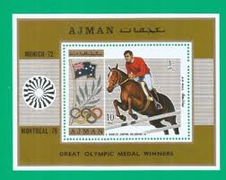 |
| Alamy | Equestrian, Olympic games, Moscow, postage stamp, Russia, USSR, 1977 Stock Photo - Alamy | 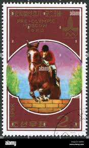 |
| Alamy | 1920 summer olympics hi-res stock photography and images - Alamy | 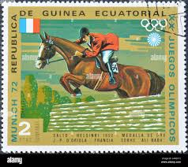 |
| eBay | AJMAN Hans Winkler, Australian Olympic Gold Medal Winner MNH souvenir sheet | eBay | 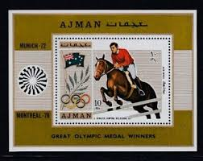 |
| Alamy | Stamp printed in LAOS shows Barn Swallow (Hirundo Rustica), from series Birds Stock Photo - Alamy | 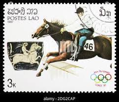 |
| eBay | Olympics Afghan Stamps for sale | eBay | |
| Alamy | Umm letter hi-res stock photography and images - Alamy | |
| terada77.com | GRENADA | |
| worldartstamps | Olympic Games – worldartstamps | |
| eBay | Dhufar 1972 Summer Olympics Show Jumping Equestrian Souvenir Sheet First Day Iss | eBay | |
| eBay | ajman 1972 munich ,s/s MNH e1558 | eBay | |
| terada77.com | LIBYA | |
| Dreamstime.com | 243 Horse Riding Olympics Stock Photos - Free & Royalty-Free Stock Photos from Dreamstime | |
| Etsy | Russian Sport - Etsy | |
| eBay | Ajman S/S Great Olympic Medal Winners 1971 MNH-6,50 Euro | eBay |